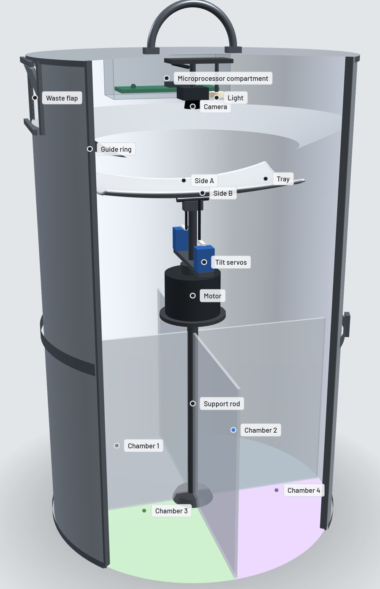
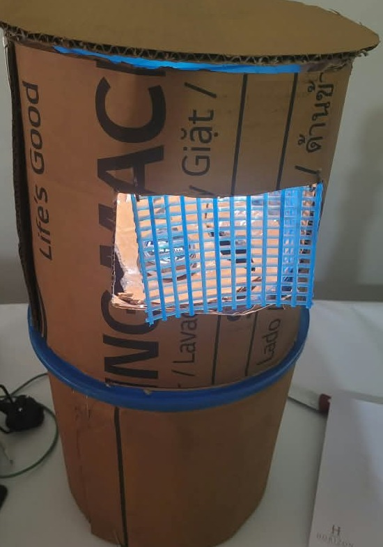
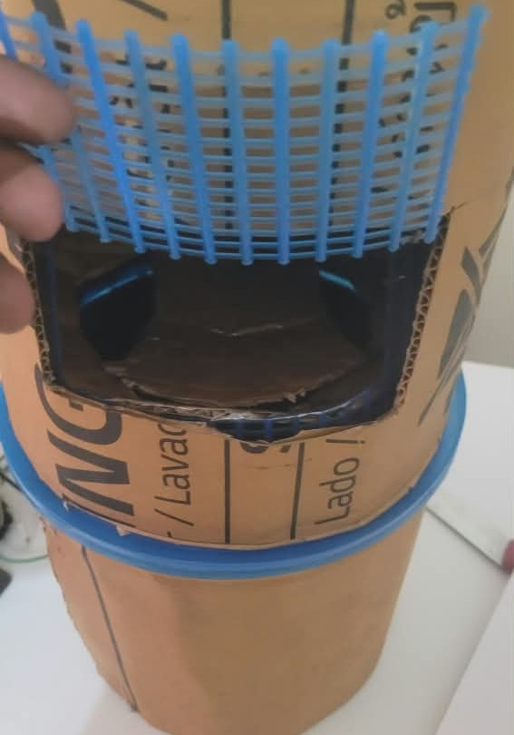
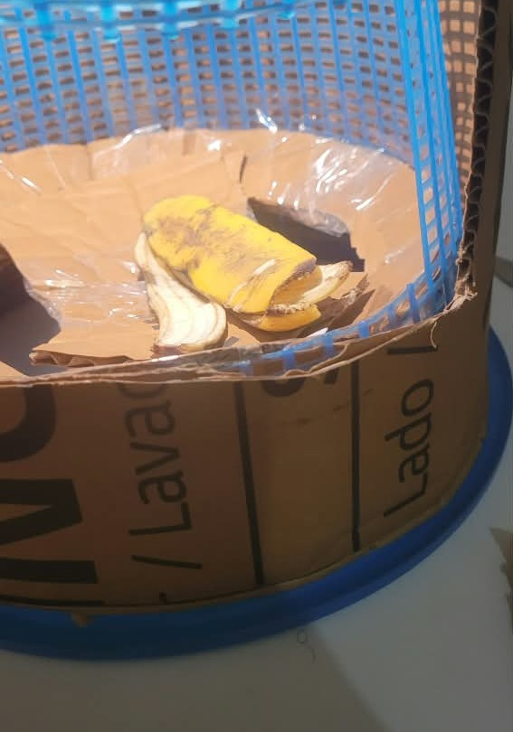

One item, seven steps
- Drop. The flap swings up; the item slides onto the tray.
- Capture. The light switches on and the camera takes a picture.
- Classify. The model predicts organic, plastic, metal or general.
- Check confidence. Uncertain items go to general and are logged.
- Rotate. The motor turns the tray 45° clockwise or anticlockwise.
- Tip. Servos tip one side; the item slides into its chamber.
- Reset & report. The tray returns home and the chamber's sensor updates its fill level.



A full-scale enclosure, insertion window and tray. A phone camera streams the tray over DroidCam to a computer running the classifier, standing in for the bin's own camera and board.
| Category | Chamber | Motor | Tip |
|---|---|---|---|
| Metal | 1 | +45° | Side A |
| Plastic | 2 | −45° | Side A |
| Organic | 3 | −45° | Side B |
| General | 4 | +45° | Side B |
Edge inference
The model runs on the bin's own microprocessor, so sorting needs no internet.
Fill level
fill = (H − d) / H × 100%, the median of several ultrasonic readings.
Wi-Fi
Readings are stored during outages and sent when the connection returns.
Organic
food & garden waste
Plastic
bottles, wrappers, pens
Metal
cans, lids, foil
General
paper, card, glass, textiles
Data. RealWaste (4,752), the Garbage Dataset and TrashNet (2,527), mapped to four classes. MD5 de-duplication; General capped at 1,500 per source. Batteries excluded.
Model. MobileNetV2, ImageNet weights, 224 × 224 input, pooling + dropout + 4-way softmax, class-weighted loss.
Training. Stage 1 trains the head with the backbone frozen (Adam, 10⁻³); stage 2 fine-tunes the top layers (3 × 10⁻⁵). Batch 32, early stopping, seed 42, Google Colab.
V1 · public data only
Tested on all of RealWaste, unseen.
V2 · + real-world images
Half of RealWaste in training; tested on the other half.